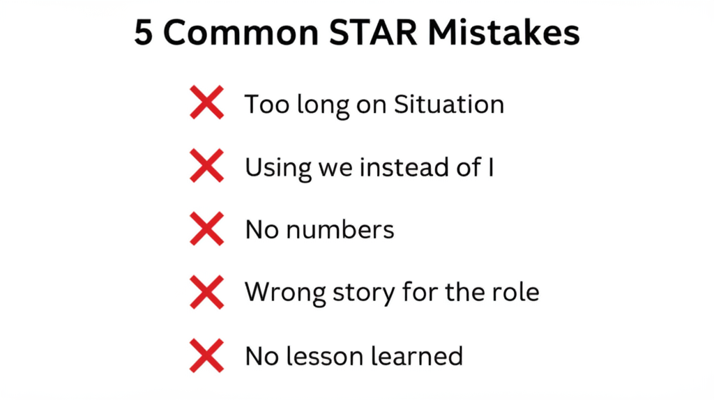

The 5 Most Common STAR Mistakes
1
Too long on Situation
Spending 2 minutes on context, 30 seconds on action. Flip the ratio.
2
Using “we” instead of “I”
Interviewers want YOUR contribution, not the team’s. Own your actions.
3
No numbers
“It improved” vs. “It improved throughput by 22%.” Always quantify.
4
Picking the wrong story
Choose stories relevant to the role, not just your most impressive moment.
5
No lesson learned
Great candidates show growth, not just results. What did the experience teach you?
